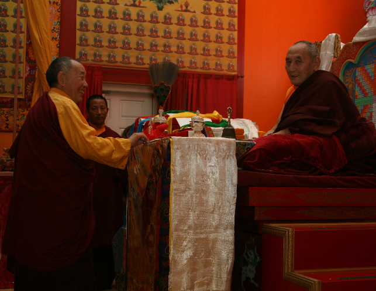

|
| Announcement |
| Calendar |
| Regular Practice |
 |
| Home Page |
| ODD Lamas |
| Membership |
| Map |
| Rental Program |
| Getting Here |
| Rinchen Terzod |


AN INTERVIEW WITH VEN. GYATRUL RINPOCHE;
VEN YANGTHANG RINPOCHE AND THE RINCHEN TERZOD
Ven. Gyatrul Rinpoche and Ven. Yangthang Rinpoche  are both senior Nyingma lamas originally from Dhomang Monastery in Eastern Tibet. Their paths separated at the time of the communist invasion of Tibet in 1959; since the 1970’s Gyatrul Rinpoche has been teaching and guiding students primarily in the West, while Yangthang Rinpoche has been doing likewise in the East. They re-connected in the mid 1980’s when the lamas met fortuitously at the Great Stupa in Boudhanath, Nepal. Since 1990, at Gyatrul Rinpoche’s invitation, Yangthang Rinpoche has visited the USA four times and given many empowerments and teachings. Once again, the lamas are joining their enlightened intention—Yangthang Rinpoche will bestow the Rinchen Terzod at Gyatrul Rinpoche’s center in Alameda, California, Orgyen Dorje Den. The Rinchen Terzod has only been offered in the United States once before, by His Holiness Penor Rinpoche, also at Gyatrul Rinpoche’s request. Following are some of his thoughts about Yangthang Rinpoche and the Rinchen Terzod.
are both senior Nyingma lamas originally from Dhomang Monastery in Eastern Tibet. Their paths separated at the time of the communist invasion of Tibet in 1959; since the 1970’s Gyatrul Rinpoche has been teaching and guiding students primarily in the West, while Yangthang Rinpoche has been doing likewise in the East. They re-connected in the mid 1980’s when the lamas met fortuitously at the Great Stupa in Boudhanath, Nepal. Since 1990, at Gyatrul Rinpoche’s invitation, Yangthang Rinpoche has visited the USA four times and given many empowerments and teachings. Once again, the lamas are joining their enlightened intention—Yangthang Rinpoche will bestow the Rinchen Terzod at Gyatrul Rinpoche’s center in Alameda, California, Orgyen Dorje Den. The Rinchen Terzod has only been offered in the United States once before, by His Holiness Penor Rinpoche, also at Gyatrul Rinpoche’s request. Following are some of his thoughts about Yangthang Rinpoche and the Rinchen Terzod.
You have known Yangthang Tulku Rinpoche since your youth at Dhomang Monastery. Can you tell us about him?
Yangthang Tulku Rinpoche is an emanation of Vimalamitra himself. In his past life he was also the great terton Lhatsen Namkha Jigmed from Sikkim whose treasures are included in the Rinchen Terzod. But he is perhaps most well known as the reincarnation of Dorje Dechen Lingpa. Yangthang Rinpoche was recognized as the tulku of this eminent terton by His Holiness Dudjom Rinpoche, by Jamyang Khyentse Chokyi Lodro, by the Dalai Lama's own guru, and others.
And what about his early life?
Dhomang Terchen’s principal disciple was Dhomang Sogtrul, who consulted with Retrang and Dudjom Rinpoche as to the details concerning the rebirth of his root teacher. They both indicated that he would be reborn soon in Sikkim, India. At the very moment that Dhomang Terchen’s incarnation was born, the sky thundered the details of his location. He was discovered exactly as described, born into the Yangthang family. This is why Rinpoche is known now as Yangthang Rinpoche. A second emanation was born in Sikkim and was brought up together with his older counterpart. When Yangthang Rinpoche was invited back to his monastery in Tibet, the younger emanation also insisted upon joining him. The two young boys departed with their party, playing and performing many miracles along the journey.
Upon returning to Dhomang Monastery both tulkus were put in the hands of Sogtrul Rinpoche and many other lamas at Dhomang. They were given the finest and best education with Khenpo Pema from the Palyul Mother Monastery as their personal instructor. Thus, both tulkus were able to fully complete all their studies. In Tibet, before the Cultural Revolution, Yangthang Rinpoche gave the entire Kangyur transmission and many other great empowerments. He became the head of Dhomang Monastery and carried out all the administrative duties personally.
In 1958, the Communist Chinese captured and killed Sogtrul Rinpoche and the younger tulku. Yangthang Rinpoche escaped to the region of Dodrupchen Monastery where, later, he was also captured and imprisoned for twenty-two years. During this time he was repeatedly tortured and endured horrible treatment from the Communists. Yet he remained optimistic and dedicated to the Buddhadharma. He encouraged his fellow prisoners to secretly continue their practice and prayers, since one day they would be freed. In fact, following the death of Mao-tse Tung, they were released from prison.
What makes him such an esteemed lama?
Among the tertons, exceptional manifestations have been given the title 'Lingpa' in acknowledgment of their remarkable qualities. Like Ratna Lingpa, Karma Lingpa, Chogyur Lingpa and others, Dorje Dechen Lingpa revealed many volumes of treasures and was an undisputed realized master, a manifestation of the wisdom and compassion of all the buddhas. As his reincarnation, Yangthang Tulku Rinpoche does have the power and blessing to give the entire Rinchen Terzod cycle of empowerments, as so few lamas are qualified to do. Moreover, he is of course also an emanation of Vimalamitra, just as Kyabje Penor Rinpoche was. Vimalamitra's wisdom is inseparable from Guru Rinpoche's, the source of the blessings of all the revealed treasures.
What is the Rinchen Terzod?
The Precious Treasury of Revealed Termas was compiled in the eighteen hundreds primarily by the great Jamgon Kongtrul Lodru Thaye, who was an incarnation of the great translator Berotsana. This collection, which is a storehouse of the precious treasures, represents the essence of the ocean of profound termas derived from the sixfold lineage of the Earlier Translation School of the Nyingmapa.
All of the tertons are emanations of Guru Rinpoche, part of the skillful means of his enlightened activity to benefit all beings. Guru Rinpoche was like the sovereign and his twenty-five disciples were like his ministers, serving his enlightened purpose. He entrusted the ter (treasures) to them and through Yeshe Tsogyal's blessing laid upon them the mandate to reveal them when they would be of most benefit in the world. The Rinchen Terzod is the collection of these transmissions, all the profound treasure lineages together.
The scope of the Rinchen Terzod is vast with nearly 700 empowerments in 3 months. How should students relate to such an extensive program? What advice do you have for them?
If you have faith and trust, then absolutely Yangthang Rinpoche is Vimalamitra. If not, then what do you have? No reason to go! If your faith and devotion are strong and good, then you will receive good blessings. If your faith is okey dokey, then you will receive okey dokey blessings. If your faith is just small, then small. If you have nothing of faith, then you get nothing. This is true not only regarding Yangthang Tulku Rinpoche, but with any lama or teacher. It depends on the student's interest and faith. The blessing does not belong to the lama, it belongs to the students themselves.
If you receive many empowerments but don't want to do the practices, that is your own problem. At least, the important thing is not to break your samaya. That is most important, for both teacher and disciple to keep their samaya pure. If you don't do the practices, at least you receive the blessing of the empowerment. If you have a little bit of faith, then you slowly do get everything, the blessings from Guru Rinpoche, from Kuntuzangpo, from the twenty-five disciples.
To have the opportunity to receive even one transmission or one day's worth of empowerments from such an amazing lama is tremendous good fortune. To have him give the entire set of Rinchen Terzod empowerments is an inconceivable blessing. It is my deepest wish that he is able to give this transmission without obstacle, and that many people are able to come and connect with this incredibly auspicious event.